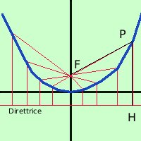

|
 Applichiamo la definizione considerando il Fuoco sull'asse y e la direttrice come retta orizzontale da banda opposta dell'origine rispetto al fuoco ed avente dall'origine la stessa distanza del fuoco PF = PH ora dobbiamo decidere quanto vale la distanza dall'origine del fuoco e della direttrice Abbiamo il solito problema: se mettiamo semplice la costante avremo poi un'equazione complicata, mentre conviene porre la costante in un certo modo in maniera che poi l'equazione resti semplice negli anni '60 si preferiva procedere cosi' Per avere il risultato semplice poniamo
quindi la direttrice avra' equazione
Per ricavare PF uso la formula della distanza fra due punti
Per trovare PH mi servono le coordinate di H osservando la figura vedo che la x di H e' uguale a quella di P mentre la y si trova sulla direttrice quindi vale -1/4a
anche qui applico la distanza fra due punti potevo fare anche la distanza punto retta, oppure osservare che il segmento e' verticale quindi si puo' ottenere come differenza fra le coordinate y
per fare prima posso uguagliare le radici e poi eliminarle prima e dopo l'uguale e quindi saltare un paio di passaggi
Per togliere la radice elevo al quadrato prima e dopo l'uguale, cosi' la radice si elimina con il quadrato
2ax2 - y = y 2ax2 = y + y 2ax2 = 2y 2y = 2ax2 ho usato la proprieta' simmetrica e, dividendo per 2, ottengo la formula finale |

|

|

|

|